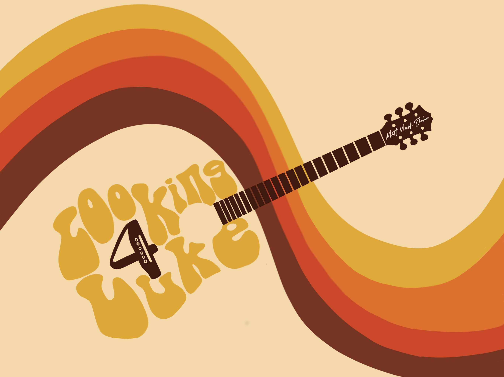

The Story So Far

Looking4Luke is a three-piece acoustic band built around guitar, piano, and percussion — no drum kit, no amps stacked to the ceiling, just three guys and the songs that made everybody fall in love with music in the first place.
From timeless classic rock anthems and soulful folk storytelling to boot-stomping country and upbeat pop hits, we deliver a dynamic and diverse live music experience that keeps every crowd moving and singing along.
Meet the Band
Matt Kiger
Piano / Keys / Vocals
Blessed with a smooth, golden baritone and the gift of gab, Matt plays the keys and is the undisputed spokesman for the group.
Mark Christensen
Percussion / Cajon / Vocals
Mark provides the literal and figurative heartbeat of the band. Delivering a powerful rhythmic drive on the cajon while anchoring our arrangements with a commanding, deep bass voice, he forms the bedrock of our acoustic sound
John O'Neal
Guitar / Vocals
John brings soaring tenor vocals and the acoustic, guitar-driven soul of roots-rock anthems to every set.
Our Influences
- The Doobie Brothers
- Eddie Rabbit
- Eagles
- Zac Brown Band
- Little Big Town